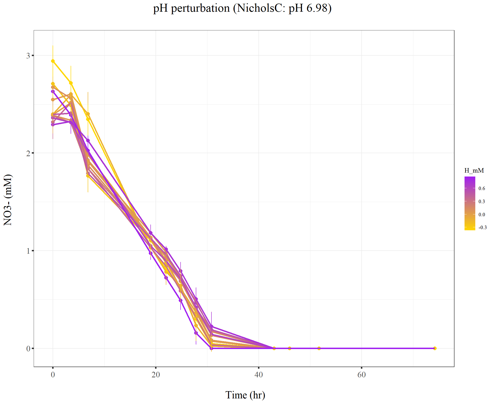

220103_Griess_pH_perturbation
KiseokUchicago
2022-01-04
Last updated: 2022-01-05
Checks: 7 0
Knit directory: Denit_visualization_R/
This reproducible R Markdown analysis was created with workflowr (version 1.6.2). The Checks tab describes the reproducibility checks that were applied when the results were created. The Past versions tab lists the development history.
Great! Since the R Markdown file has been committed to the Git repository, you know the exact version of the code that produced these results.
Great job! The global environment was empty. Objects defined in the global environment can affect the analysis in your R Markdown file in unknown ways. For reproduciblity it’s best to always run the code in an empty environment.
The command set.seed(20210924) was run prior to running the code in the R Markdown file. Setting a seed ensures that any results that rely on randomness, e.g. subsampling or permutations, are reproducible.
Great job! Recording the operating system, R version, and package versions is critical for reproducibility.
Nice! There were no cached chunks for this analysis, so you can be confident that you successfully produced the results during this run.
Great job! Using relative paths to the files within your workflowr project makes it easier to run your code on other machines.
Great! You are using Git for version control. Tracking code development and connecting the code version to the results is critical for reproducibility.
The results in this page were generated with repository version 7899ce4. See the Past versions tab to see a history of the changes made to the R Markdown and HTML files.
Note that you need to be careful to ensure that all relevant files for the analysis have been committed to Git prior to generating the results (you can use wflow_publish or wflow_git_commit). workflowr only checks the R Markdown file, but you know if there are other scripts or data files that it depends on. Below is the status of the Git repository when the results were generated:
Ignored files:
Ignored: .Rhistory
Ignored: .Rproj.user/
Ignored: Figure_211014_external_lab/
Untracked files:
Untracked: 210928_pH.pdf
Untracked: 211014_TN.pdf
Untracked: 211014_drying_oven_TOC.pdf
Untracked: 211014_toc_lab.pdf
Untracked: 211020_df_full_innate.xlsx
Untracked: 211222_df_dry_gg.xlsx
Untracked: 211222_df_dry_points.xlsx
Untracked: Figure_210911_TOC/
Untracked: Figure_210924/
Untracked: Figure_210927_TOC/
Untracked: Figure_210929/
Untracked: Figure_211006/
Untracked: Figure_211007/
Untracked: Figure_211008/
Untracked: Figure_211013/
Untracked: analysis/211220_Griess_slurry_vs_supernatant2.Rmd
Untracked: analysis/211224_TOC_spikein_test.Rmd
Untracked: data/120321_soil_buffering_capacity_Nichols-B.xlsx
Untracked: data/210911_TOC_sample_plate1.xlsx
Untracked: data/210922_Griess_sample_plate1-investigating.xlsx
Untracked: data/210922_Griess_sample_plate1.xlsx
Untracked: data/210927_TOC_sample_plate1_100ul.xlsx
Untracked: data/210927_TOC_sample_plate1_10ul.xlsx
Untracked: data/210928_Griess_sample_plate1.xlsx
Untracked: data/211005_Griess_sample_plate1.xlsx
Untracked: data/211007_Griess_blank_plate1.xlsx
Untracked: data/211007_Griess_blank_plate2.xlsx
Untracked: data/211008_Griess_blank_plate0.xlsx
Untracked: data/211008_Griess_blank_plate1.xlsx
Untracked: data/211017_Griess_plate0.xlsx
Untracked: data/211017_Griess_plate1.xlsx
Untracked: data/211017_Griess_plate2.xlsx
Untracked: data/211017_Griess_plate3.xlsx
Untracked: data/211017_Griess_plate4.xlsx
Untracked: data/211017_Griess_plate5.xlsx
Untracked: data/211017_Griess_plate6.xlsx
Untracked: data/211017_Griess_plate7.xlsx
Untracked: data/211017_Griess_plate8.xlsx
Untracked: data/211019_Griess_plate1.xlsx
Untracked: data/211020_Griess_plate0.xlsx
Untracked: data/211020_Griess_plate1.xlsx
Untracked: data/211020_df_full_innate.xlsx
Untracked: data/211025_Griess_no3_fit_plate0.xlsx
Untracked: data/211025_Griess_no3_fit_plate1.xlsx
Untracked: data/211025_Griess_plate0.xlsx
Untracked: data/211025_Griess_plate1.xlsx
Untracked: data/211028_Griess_plate1.xlsx
Untracked: data/211028_Griess_plate1_no3_fit.xlsx
Untracked: data/211028_Griess_plate2.xlsx
Untracked: data/211028_Griess_plate2_no3_fit.xlsx
Untracked: data/211028_Griess_plate3.xlsx
Untracked: data/211028_Griess_plate3_no3_fit.xlsx
Untracked: data/211028_Griess_plate4.xlsx
Untracked: data/211028_Griess_plate4_no3_fit.xlsx
Untracked: data/211028_time_table.xlsx
Untracked: data/211127_Griess_SUP1.xlsx
Untracked: data/211127_Griess_SUP11.xlsx
Untracked: data/211127_Griess_SUP3.xlsx
Untracked: data/211127_Griess_SUP5.xlsx
Untracked: data/211127_Griess_SUP7.xlsx
Untracked: data/211127_Griess_SUP9.xlsx
Untracked: data/211127_Griess_plate0.xlsx
Untracked: data/211127_time_table.xlsx
Untracked: data/211128_Griess_plate1.xlsx
Untracked: data/211128_Griess_plate10.xlsx
Untracked: data/211128_Griess_plate11.xlsx
Untracked: data/211128_Griess_plate2.xlsx
Untracked: data/211128_Griess_plate3.xlsx
Untracked: data/211128_Griess_plate4.xlsx
Untracked: data/211128_Griess_plate5.xlsx
Untracked: data/211128_Griess_plate6.xlsx
Untracked: data/211128_Griess_plate7.xlsx
Untracked: data/211128_Griess_plate8.xlsx
Untracked: data/211128_Griess_plate9.xlsx
Untracked: data/211128_time_table.xlsx
Untracked: data/211201_pH_colorimetric.xlsx
Untracked: data/211203_slurry_vs_water_drying_table.xlsx
Untracked: data/211203_slurry_vs_water_drying_time.xlsx
Untracked: data/211208_pH_colorimetric_T3.xlsx
Untracked: data/211208_pH_colorimetric_T4.xlsx
Untracked: data/211208_pH_colorimetric_T5.xlsx
Untracked: data/211208_pH_colorimetric_plate1.xlsx
Untracked: data/211208_pH_colorimetric_plate2.xlsx
Untracked: data/211208_pH_colorimetric_plate3.xlsx
Untracked: data/211208_time_table.xlsx
Untracked: data/211209_OD600_T1.xlsx
Untracked: data/211209_OD600_T2.xlsx
Untracked: data/211209_OD600_T3.xlsx
Untracked: data/211209_time_table.xlsx
Untracked: data/211210_pH_colorimetric_T0.xlsx
Untracked: data/211210_pH_colorimetric_T1.xlsx
Untracked: data/211210_pH_colorimetric_T2.xlsx
Untracked: data/211210_pH_colorimetric_T3.xlsx
Untracked: data/211210_time_table.xlsx
Untracked: data/211218_pH_colorimetric_t0.xlsx
Untracked: data/211218_pH_colorimetric_t1.xlsx
Untracked: data/211218_pH_colorimetric_t2.xlsx
Untracked: data/211218_pH_colorimetric_t3.xlsx
Untracked: data/211218_pH_colorimetric_t4.xlsx
Untracked: data/211218_time_table.xlsx
Untracked: data/211220_Griess_plate1.xlsx
Untracked: data/211220_Griess_plate10.xlsx
Untracked: data/211220_Griess_plate11.xlsx
Untracked: data/211220_Griess_plate2.xlsx
Untracked: data/211220_Griess_plate3.xlsx
Untracked: data/211220_Griess_plate4.xlsx
Untracked: data/211220_Griess_plate5.xlsx
Untracked: data/211220_Griess_plate6.xlsx
Untracked: data/211220_Griess_plate7.xlsx
Untracked: data/211220_Griess_plate8.xlsx
Untracked: data/211220_Griess_plate9.xlsx
Untracked: data/211220_time_table_AU.xlsx
Untracked: data/211220_time_table_BN.xlsx
Untracked: data/211224_TOC_sample_plate1.xlsx
Untracked: data/220103_Griess_T0.xlsx
Untracked: data/220103_Griess_T1.xlsx
Untracked: data/220103_Griess_T11.xlsx
Untracked: data/220103_Griess_T12.xlsx
Untracked: data/220103_Griess_T2.xlsx
Untracked: data/220103_Griess_T3.xlsx
Untracked: data/220103_Griess_T4.xlsx
Untracked: data/220103_Griess_T5.xlsx
Untracked: data/220103_Griess_T6.xlsx
Untracked: data/220103_Griess_T7.xlsx
Untracked: data/220103_Griess_T8.xlsx
Untracked: data/220103_Griess_T9.xlsx
Untracked: data/220103_time_table.xlsx
Untracked: data/TOC_TN_measurement_2_labs_211014.xlsx
Untracked: data/dry_weight_curve(9.5.21).xlsx
Untracked: data/pH_data(11.17.21)-Midway_etc.xlsx
Untracked: data/pH_data(12.6.21)-Midway_incubation_endpoint.xlsx
Untracked: data/pH_data(9.14.21).xlsx
Untracked: data/pH_data(9.28.21).xlsx
Untracked: df_NO2NO3.xlsx
Untracked: df_pH.xlsx
Untracked: ~$df_pH.xlsx
Unstaged changes:
Modified: analysis/Soil_drying_curve.Rmd
Note that any generated files, e.g. HTML, png, CSS, etc., are not included in this status report because it is ok for generated content to have uncommitted changes.
These are the previous versions of the repository in which changes were made to the R Markdown (analysis/220103_Griess_pH_perturbation.Rmd) and HTML (docs/220103_Griess_pH_perturbation.html) files. If you’ve configured a remote Git repository (see ?wflow_git_remote), click on the hyperlinks in the table below to view the files as they were in that past version.
| File | Version | Author | Date | Message |
|---|---|---|---|---|
| Rmd | 7899ce4 | KiseokUchicago | 2022-01-05 | wflow_publish(“analysis/220103_Griess_pH_perturbation.Rmd”) |
Time series analysis - Slurry vs Supernatant (Griess assay)
Researcher: Kiseok Lee
Experiment Date: 12/29/21 - 1/3/22 (3 days)
Analysis Date: 1/4/21 Lab: Seppe Kuehn
# libraries
library(dplyr)
library(ggplot2)
library(RColorBrewer)
library(vegan)
library(tidyverse)
library(magrittr)
library(readxl)
library(reshape2)
library(gtools)
library(devtools)
library(openxlsx)
library(ape)
library(stringr)
library(tidyr)
library(ggrepel)
library(ggpubr)
## theme for ggplot
mytheme <- theme_bw() +
theme(text = element_text(family="serif")) +
theme(plot.title = element_text(size = 19,hjust = 0.5, family="serif")) +
theme(axis.title.x = element_text(size = 17,hjust = 0.5, family="serif")) +
theme(axis.title.y = element_text(size = 17,hjust = 0.5, family="serif")) +
theme(axis.text.x = element_text(hjust = 0.5, vjust=0.3,size=13, family="serif"))+
theme(axis.text.y = element_text(size=10, family="serif"))+
theme(panel.grid.major = element_blank()) +
theme(panel.grid.minor = element_blank(),panel.background=element_blank(),panel.border=element_blank(),plot.background=element_blank()) +
theme(axis.ticks = element_line(size = 1.1))
mytheme_2d <- theme_bw() +
theme(text = element_text(family="serif")) +
theme(plot.title = element_text(size = 19,hjust = 0.5, family="serif")) +
theme(axis.title.x = element_text(size = 17,hjust = 0.5, family="serif")) +
theme(axis.title.y = element_text(size = 17,hjust = 0.5, family="serif")) +
theme(axis.text.x = element_text(hjust = 0.5, vjust=0.3,size=13, family="serif"))+
theme(axis.text.y = element_text(size=13, family="serif"))+
# theme(panel.grid.major = element_blank()) +
# theme(panel.grid.minor = element_blank(),panel.background=element_blank(),plot.background=element_blank()) +
theme(axis.ticks = element_line(size = 1.1))
# color collection
my_color_collection <- c(
"#CBD588", "#5F7FC7", "orange", "#AD6F3B", "#673770",
"#D14285", "#652926", "#C84248", "#8569D5", "#5E738F",
"#D1A33D", "#8A7C64", "#599861","#616163", "#FFCDB2",
"#6D9F71", "#242F40",
"#CCA43B", "#F92A82", "#ED7B84", "#7EB77F",
"#DEC4A1", "#E5D1D0", '#0E8482', '#C9DAEA', '#337357',
'#95C623', '#E55812', '#04471C', '#F2D7EE', '#D3BCC0',
'#A5668B', '#69306D', '#0E103D', '#1A535C', '#4ECDC4',
'#F7FFF7', '#FF6B6B', '#FFE66D', '#6699CC', '#FFF275',
'#FF8C42', '#FF3C38', '#A23E48', '#000000', '#CF5C36',
'#EEE5E9', '#7C7C7C', '#EFC88B', '#2E5266', '#6E8898',
'#9FB1BC', '#D3D0CB', '#E2C044', '#5BC0EB', '#FDE74C',
'#9BC53D', '#E55934', '#FA7921', "#CD9BCD", "#508578", "#DA5724")
# for git push, use this instead of using wflow_git_push()
# git push -u origin master (in the Git app / in the working directory)1. Import data table from python code
We are going to use the vcl3 treated standard curve that is fitted with pure nitrate standards
# import file
df_T0 <- openxlsx::read.xlsx("data/220103_Griess_T0.xlsx")
df_T1 <- openxlsx::read.xlsx("data/220103_Griess_T1.xlsx")
df_T2 <- openxlsx::read.xlsx("data/220103_Griess_T2.xlsx")
df_T3 <- openxlsx::read.xlsx("data/220103_Griess_T3.xlsx")
df_T4 <- openxlsx::read.xlsx("data/220103_Griess_T4.xlsx")
df_T5 <- openxlsx::read.xlsx("data/220103_Griess_T5.xlsx")
df_T6 <- openxlsx::read.xlsx("data/220103_Griess_T6.xlsx")
df_T7 <- openxlsx::read.xlsx("data/220103_Griess_T7.xlsx")
df_T8 <- openxlsx::read.xlsx("data/220103_Griess_T8.xlsx")
df_T9 <- openxlsx::read.xlsx("data/220103_Griess_T9.xlsx")
# df_T10 <- openxlsx::read.xlsx("data/220103_Griess_T10.xlsx") # is still in freezer (2M KCl treated & spin down)
df_T11 <- openxlsx::read.xlsx("data/220103_Griess_T11.xlsx")
df_T12 <- openxlsx::read.xlsx("data/220103_Griess_T12.xlsx")
head(df_T0) Well Extraction_method Extraction_ul Nitrite_input Nitrate_input Soil
1 A01 0.5_1_1.5 70 0 2 NicholsC
2 A02 0.5_1_1.5 70 0 2 NicholsC
3 A03 0.5_1_1.5 70 0 2 NicholsC
4 A04 0.5_1_1.5 70 0 2 NicholsC
5 A05 0.5_1_1.5 70 0 2 NicholsC
6 A06 0.5_1_1.5 70 0 2 NicholsC
Titration_type Concentration_M Added_ul Sample_type Time_point NO2_OD540
1 NaOH 0.1500 5 Slurry T0 0.00295
2 NaOH 0.0500 5 Slurry T0 0.00090
3 HCl 0.0125 5 Slurry T0 0.00255
4 HCl 0.0500 5 Slurry T0 0.00030
5 HCl 0.1500 5 Slurry T0 0.00330
6 HCl 0.2500 5 Slurry T0 0.00190
NO2NO3_OD540 NO2_mM NO2NO3_mM NO3_mM
1 1.22295 0.01248408 1.1881451 1.1756610
2 0.99955 0.01147429 0.9526517 0.9411774
3 1.02465 0.01228704 0.9786329 0.9663459
4 1.02225 0.01117878 0.9761436 0.9649648
5 0.88965 0.01265650 0.8402336 0.8275771
6 0.93655 0.01196685 0.8879454 0.8759785colnames(df_T0) [1] "Well" "Extraction_method" "Extraction_ul"
[4] "Nitrite_input" "Nitrate_input" "Soil"
[7] "Titration_type" "Concentration_M" "Added_ul"
[10] "Sample_type" "Time_point" "NO2_OD540"
[13] "NO2NO3_OD540" "NO2_mM" "NO2NO3_mM"
[16] "NO3_mM" dim(df_T0)[1] 96 16head(df_T1) Well Extraction_method Extraction_ul Nitrite_input Nitrate_input Soil
1 A01 0.5_1_1.5 70 0 2 NicholsC
2 A02 0.5_1_1.5 70 0 2 NicholsC
3 A03 0.5_1_1.5 70 0 2 NicholsC
4 A04 0.5_1_1.5 70 0 2 NicholsC
5 A05 0.5_1_1.5 70 0 2 NicholsC
6 A06 0.5_1_1.5 70 0 2 NicholsC
Titration_type Concentration_M Added_ul Sample_type Time_point NO2_OD540
1 NaOH 0.1500 5 Slurry T1 0.01075
2 NaOH 0.0500 5 Slurry T1 0.00835
3 HCl 0.0125 5 Slurry T1 0.00560
4 HCl 0.0500 5 Slurry T1 0.00770
5 HCl 0.1500 5 Slurry T1 0.00040
6 HCl 0.2500 5 Slurry T1 0.00510
NO2NO3_OD540 NO2_mM NO2NO3_mM NO3_mM
1 1.09105 0.01632752 1.047932885 1.0316054
2 1.04860 0.01514470 1.003532872 0.9883882
3 1.06705 0.01378963 1.022788259 1.0089986
4 1.00685 0.01482438 0.960195982 0.9453716
5 0.01015 0.01122803 0.007572522 0.0000000
6 0.89640 0.01354328 0.847076718 0.8335334colnames(df_T1) [1] "Well" "Extraction_method" "Extraction_ul"
[4] "Nitrite_input" "Nitrate_input" "Soil"
[7] "Titration_type" "Concentration_M" "Added_ul"
[10] "Sample_type" "Time_point" "NO2_OD540"
[13] "NO2NO3_OD540" "NO2_mM" "NO2NO3_mM"
[16] "NO3_mM" dim(df_T1)[1] 96 16head(df_T2) Well Extraction_method Extraction_ul Nitrite_input Nitrate_input Soil
1 A01 0.5_1_1.5 70 0 2 NicholsC
2 A02 0.5_1_1.5 70 0 2 NicholsC
3 A03 0.5_1_1.5 70 0 2 NicholsC
4 A04 0.5_1_1.5 70 0 2 NicholsC
5 A05 0.5_1_1.5 70 0 2 NicholsC
6 A06 0.5_1_1.5 70 0 2 NicholsC
Titration_type Concentration_M Added_ul Sample_type Time_point NO2_OD540
1 NaOH 0.1500 5 Slurry T2 0.09415
2 NaOH 0.0500 5 Slurry T2 0.07985
3 HCl 0.0125 5 Slurry T2 0.06855
4 HCl 0.0500 5 Slurry T2 0.05620
5 HCl 0.1500 5 Slurry T2 0.06360
6 HCl 0.2500 5 Slurry T2 0.05550
NO2NO3_OD540 NO2_mM NO2NO3_mM NO3_mM
1 1.04985 0.05755537 1.0048354 0.9472800
2 1.09370 0.05046900 1.0507160 1.0002470
3 0.83310 0.04487437 0.7832104 0.7383360
4 0.81850 0.03876502 0.7685762 0.7298112
5 0.78190 0.04242504 0.7320465 0.6896214
6 0.88655 0.03841890 0.8370934 0.7986745colnames(df_T2) [1] "Well" "Extraction_method" "Extraction_ul"
[4] "Nitrite_input" "Nitrate_input" "Soil"
[7] "Titration_type" "Concentration_M" "Added_ul"
[10] "Sample_type" "Time_point" "NO2_OD540"
[13] "NO2NO3_OD540" "NO2_mM" "NO2NO3_mM"
[16] "NO3_mM" dim(df_T2)[1] 96 16head(df_T3) Well Extraction_method Extraction_ul Nitrite_input Nitrate_input Soil
1 A01 0.5_1_1.5 70 0 2 NicholsC
2 A02 0.5_1_1.5 70 0 2 NicholsC
3 A03 0.5_1_1.5 70 0 2 NicholsC
4 A04 0.5_1_1.5 70 0 2 NicholsC
5 A05 0.5_1_1.5 70 0 2 NicholsC
6 A06 0.5_1_1.5 70 0 2 NicholsC
Titration_type Concentration_M Added_ul Sample_type Time_point NO2_OD540
1 NaOH 0.1500 5 Slurry T3 0.00795
2 NaOH 0.0500 5 Slurry T3 0.00685
3 HCl 0.0125 5 Slurry T3 0.00995
4 HCl 0.0500 5 Slurry T3 0.00860
5 HCl 0.1500 5 Slurry T3 0.00455
6 HCl 0.2500 5 Slurry T3 0.00710
NO2NO3_OD540 NO2_mM NO2NO3_mM NO3_mM
1 0.44800 0.01494758 0.4084662 0.3935186
2 0.45075 0.01440553 0.4110640 0.3966584
3 0.43795 0.01593322 0.3989816 0.3830484
4 0.48980 0.01526790 0.4480673 0.4327994
5 0.47650 0.01327230 0.4354401 0.4221678
6 0.42280 0.01452872 0.3847105 0.3701818colnames(df_T3) [1] "Well" "Extraction_method" "Extraction_ul"
[4] "Nitrite_input" "Nitrate_input" "Soil"
[7] "Titration_type" "Concentration_M" "Added_ul"
[10] "Sample_type" "Time_point" "NO2_OD540"
[13] "NO2NO3_OD540" "NO2_mM" "NO2NO3_mM"
[16] "NO3_mM" dim(df_T3)[1] 96 16head(df_T4) Well Extraction_method Extraction_ul Nitrite_input Nitrate_input Soil
1 A01 0.5_1_1.5 70 0 2 NicholsC
2 A02 0.5_1_1.5 70 0 2 NicholsC
3 A03 0.5_1_1.5 70 0 2 NicholsC
4 A04 0.5_1_1.5 70 0 2 NicholsC
5 A05 0.5_1_1.5 70 0 2 NicholsC
6 A06 0.5_1_1.5 70 0 2 NicholsC
Titration_type Concentration_M Added_ul Sample_type Time_point NO2_OD540
1 NaOH 0.1500 5 Slurry T4 0.01275
2 NaOH 0.0500 5 Slurry T4 0.01065
3 HCl 0.0125 5 Slurry T4 0.00795
4 HCl 0.0500 5 Slurry T4 0.00795
5 HCl 0.1500 5 Slurry T4 0.00765
6 HCl 0.2500 5 Slurry T4 0.00790
NO2NO3_OD540 NO2_mM NO2NO3_mM NO3_mM
1 0.34215 0.01731335 0.3092700 0.2919566
2 0.31450 0.01627823 0.2836080 0.2673297
3 0.38075 0.01494758 0.3452661 0.3303186
4 0.42285 0.01494758 0.3847576 0.3698100
5 0.36460 0.01479974 0.3301811 0.3153814
6 0.37245 0.01492294 0.3375090 0.3225861colnames(df_T4) [1] "Well" "Extraction_method" "Extraction_ul"
[4] "Nitrite_input" "Nitrate_input" "Soil"
[7] "Titration_type" "Concentration_M" "Added_ul"
[10] "Sample_type" "Time_point" "NO2_OD540"
[13] "NO2NO3_OD540" "NO2_mM" "NO2NO3_mM"
[16] "NO3_mM" dim(df_T4)[1] 96 16head(df_T5) Well Extraction_method Extraction_ul Nitrite_input Nitrate_input Soil
1 A01 0.5_1_1.5 70 0 2 NicholsC
2 A02 0.5_1_1.5 70 0 2 NicholsC
3 A03 0.5_1_1.5 70 0 2 NicholsC
4 A04 0.5_1_1.5 70 0 2 NicholsC
5 A05 0.5_1_1.5 70 0 2 NicholsC
6 A06 0.5_1_1.5 70 0 2 NicholsC
Titration_type Concentration_M Added_ul Sample_type Time_point NO2_OD540
1 NaOH 0.1500 5 Slurry T5 0.00255
2 NaOH 0.0500 5 Slurry T5 0.00335
3 HCl 0.0125 5 Slurry T5 0.00330
4 HCl 0.0500 5 Slurry T5 0.00200
5 HCl 0.1500 5 Slurry T5 0.00275
6 HCl 0.2500 5 Slurry T5 0.00210
NO2NO3_OD540 NO2_mM NO2NO3_mM NO3_mM
1 0.27345 0.01228704 0.2456955 0.2334085
2 0.25605 0.01268113 0.2296918 0.2170107
3 0.28245 0.01265650 0.2539888 0.2413323
4 0.32980 0.01201611 0.2977953 0.2857792
5 0.26500 0.01238556 0.2379187 0.2255332
6 0.32795 0.01206537 0.2960782 0.2840129colnames(df_T5) [1] "Well" "Extraction_method" "Extraction_ul"
[4] "Nitrite_input" "Nitrate_input" "Soil"
[7] "Titration_type" "Concentration_M" "Added_ul"
[10] "Sample_type" "Time_point" "NO2_OD540"
[13] "NO2NO3_OD540" "NO2_mM" "NO2NO3_mM"
[16] "NO3_mM" dim(df_T5)[1] 96 16dim(df_T6)[1] 96 16dim(df_T7)[1] 96 16dim(df_T8)[1] 96 16dim(df_T9)[1] 96 16dim(df_T10)Error in eval(expr, envir, enclos): object 'df_T10' not founddim(df_T11)[1] 96 16dim(df_T12)[1] 96 16# X1 to Well
# df_T0 %<>% rename(Well = X1)
# df_T2 %<>% rename(Well = X1)
# df_T3 %<>% rename(Well = X1)
# df_T4 %<>% rename(Well = X1)
# df_T5 %<>% rename(Well = X1)
# df_T6 %<>% rename(Well = X1)
# df_T7 %<>% rename(Well = X1)
# df_T8 %<>% rename(Well = X1)
# df_T9 %<>% rename(Well = X1)
# df_T10 %<>% rename(Well = X1)
# df_T11 %<>% rename(Well = X1)
# remove wells that were contaminated during the experiment
df_T1 %<>% filter(!(Well %in% c("B03","A05","A12","B12"))) # filter burst issue
df_T6 %<>% filter(!(Well %in% c("A11"))) # filter burst issue
df_T8 %<>% filter(!(Well %in% c("A07", "A08", "E08"))) # filter burst issue
df_T11 %<>% filter(!(Well %in% c("A01"))) # filter burst issue # G11 was removed because of abnormal value compared to other 2 replicates
# dim(df_T4)
# bind two dataframe
df_T <- rbind(df_T0, df_T1, df_T2, df_T3, df_T4, df_T5, df_T6, df_T7, df_T8, df_T9, df_T11, df_T12)
dim(df_T)[1] 1143 16# remove NA
dim(df_T)[1] 1143 16df_T <- na.omit(df_T)
dim(df_T)[1] 1143 16# multiply dilution factor which is 5/2
df_T %<>% select(-NO2_OD540, -NO2NO3_OD540)
df_T %<>% mutate(NO2_mM = NO2_mM * (5/2), NO2NO3_mM = NO2NO3_mM * (5/2), NO3_mM = NO3_mM * (5/2))
# Get the metadata for time point and left join
Time_table <- openxlsx::read.xlsx("data/220103_time_table.xlsx")
# Time_table_BN <- openxlsx::read.xlsx("data/220103_time_table_BN.xlsx")
# Time_table <- rbind(Time_table_AU, Time_table_BN)
Time_table %<>% select(-Date)
dim(df_T)[1] 1143 14df_T <- df_T %>% left_join(Time_table, by=("Time_point"="Time_point"))
dim(df_T)[1] 1143 17colnames(df_T) [1] "Well" "Extraction_method" "Extraction_ul"
[4] "Nitrite_input" "Nitrate_input" "Soil"
[7] "Titration_type" "Concentration_M" "Added_ul"
[10] "Sample_type" "Time_point" "NO2_mM"
[13] "NO2NO3_mM" "NO3_mM" "Time_minutes"
[16] "Time_hours" "Time_days" # time_point order
# df_T$Time_point <- factor(df_T$Time_point, levels = paste0("T",0:10))2. Get average and standard deviation & Moisture correction & Blank correction
# plot to see
ggplot(df_T, aes(x=Time_point, y=NO3_mM, color=Sample_type, group=Sample_type)) +
geom_point(size=2.5, shape=21) +
# geom_line(size=1)+
scale_fill_brewer(palette='Set2') +
ylab("NO3- (mM) \n") +
xlab("\n Nitrate_spike_in (mM)") +
# scale_y_continuous(breaks = seq(0,0.3,0.05), limits=c(0, 0.3))+
ggtitle("Without averaging \n") +
mytheme_2d# plot to see
ggplot(df_T0, aes(x=Time_point, y=NO3_mM, color=Sample_type, group=Sample_type)) +
geom_point(size=2.5, shape=21) +
# geom_line(size=1)+
scale_fill_brewer(palette='Set2') +
ylab("NO3- (mM) \n") +
xlab("\n Nitrate_spike_in (mM)") +
# scale_y_continuous(breaks = seq(0,0.3,0.05), limits=c(0, 0.3))+
ggtitle("Without averaging \n") +
mytheme_2d# plot to see
ggplot(df_T1, aes(x=Time_point, y=NO3_mM, color=Sample_type, group=Sample_type)) +
geom_point(size=2.5, shape=21) +
# geom_line(size=1)+
scale_fill_brewer(palette='Set2') +
ylab("NO3- (mM) \n") +
xlab("\n Nitrate_spike_in (mM)") +
# scale_y_continuous(breaks = seq(0,0.3,0.05), limits=c(0, 0.3))+
ggtitle("Without averaging \n") +
mytheme_2d# plot to see
ggplot(df_T2, aes(x=Time_point, y=NO3_mM, color=Sample_type, group=Sample_type)) +
geom_point(size=2.5, shape=21) +
# geom_line(size=1)+
scale_fill_brewer(palette='Set2') +
ylab("NO3- (mM) \n") +
xlab("\n Nitrate_spike_in (mM)") +
# scale_y_continuous(breaks = seq(0,0.3,0.05), limits=c(0, 0.3))+
ggtitle("Without averaging \n") +
mytheme_2d# plot to see
ggplot(df_T3, aes(x=Time_point, y=NO3_mM, color=Sample_type, group=Sample_type)) +
geom_point(size=2.5, shape=21) +
# geom_line(size=1)+
scale_fill_brewer(palette='Set2') +
ylab("NO3- (mM) \n") +
xlab("\n Nitrate_spike_in (mM)") +
# scale_y_continuous(breaks = seq(0,0.3,0.05), limits=c(0, 0.3))+
ggtitle("Without averaging \n") +
mytheme_2d# plot to see
ggplot(df_T4, aes(x=Time_point, y=NO3_mM, color=Sample_type, group=Sample_type)) +
geom_point(size=2.5, shape=21) +
# geom_line(size=1)+
scale_fill_brewer(palette='Set2') +
ylab("NO3- (mM) \n") +
xlab("\n Nitrate_spike_in (mM)") +
# scale_y_continuous(breaks = seq(0,0.3,0.05), limits=c(0, 0.3))+
ggtitle("Without averaging \n") +
mytheme_2d
# plot to see
ggplot(df_T5, aes(x=Time_point, y=NO3_mM, color=Sample_type, group=Sample_type)) +
geom_point(size=2.5, shape=21) +
# geom_line(size=1)+
scale_fill_brewer(palette='Set2') +
ylab("NO3- (mM) \n") +
xlab("\n Nitrate_spike_in (mM)") +
# scale_y_continuous(breaks = seq(0,0.3,0.05), limits=c(0, 0.3))+
ggtitle("Without averaging \n") +
mytheme_2d# plot to see
ggplot(df_T6, aes(x=Time_point, y=NO3_mM, color=Sample_type, group=Sample_type)) +
geom_point(size=2.5, shape=21) +
# geom_line(size=1)+
scale_fill_brewer(palette='Set2') +
ylab("NO3- (mM) \n") +
xlab("\n Nitrate_spike_in (mM)") +
# scale_y_continuous(breaks = seq(0,0.3,0.05), limits=c(0, 0.3))+
ggtitle("Without averaging \n") +
mytheme_2d# plot to see
ggplot(df_T7, aes(x=Time_point, y=NO3_mM, color=Sample_type, group=Sample_type)) +
geom_point(size=2.5, shape=21) +
# geom_line(size=1)+
scale_fill_brewer(palette='Set2') +
ylab("NO3- (mM) \n") +
xlab("\n Nitrate_spike_in (mM)") +
# scale_y_continuous(breaks = seq(0,0.3,0.05), limits=c(0, 0.3))+
ggtitle("Without averaging \n") +
mytheme_2d# plot to see
ggplot(df_T8, aes(x=Time_point, y=NO3_mM, color=Sample_type, group=Sample_type)) +
geom_point(size=2.5, shape=21) +
# geom_line(size=1)+
scale_fill_brewer(palette='Set2') +
ylab("NO3- (mM) \n") +
xlab("\n Nitrate_spike_in (mM)") +
# scale_y_continuous(breaks = seq(0,0.3,0.05), limits=c(0, 0.3))+
ggtitle("Without averaging \n") +
mytheme_2d# plot to see
ggplot(df_T9, aes(x=Time_point, y=NO3_mM, color=Sample_type, group=Sample_type)) +
geom_point(size=2.5, shape=21) +
# geom_line(size=1)+
scale_fill_brewer(palette='Set2') +
ylab("NO3- (mM) \n") +
xlab("\n Nitrate_spike_in (mM)") +
# scale_y_continuous(breaks = seq(0,0.3,0.05), limits=c(0, 0.3))+
ggtitle("Without averaging \n") +
mytheme_2d# plot to see
ggplot(df_T10, aes(x=Time_point, y=NO3_mM, color=Sample_type, group=Sample_type)) +
geom_point(size=2.5, shape=21) +
# geom_line(size=1)+
scale_fill_brewer(palette='Set2') +
ylab("NO3- (mM) \n") +
xlab("\n Nitrate_spike_in (mM)") +
# scale_y_continuous(breaks = seq(0,0.3,0.05), limits=c(0, 0.3))+
ggtitle("Without averaging \n") +
mytheme_2dError in ggplot(df_T10, aes(x = Time_point, y = NO3_mM, color = Sample_type, : object 'df_T10' not found# plot to see
ggplot(df_T11, aes(x=Time_point, y=NO3_mM, color=Sample_type, group=Sample_type)) +
geom_point(size=2.5, shape=21) +
# geom_line(size=1)+
scale_fill_brewer(palette='Set2') +
ylab("NO3- (mM) \n") +
xlab("\n Nitrate_spike_in (mM)") +
# scale_y_continuous(breaks = seq(0,0.3,0.05), limits=c(0, 0.3))+
ggtitle("Without averaging \n") +
mytheme_2d# plot to see
ggplot(df_T12, aes(x=Time_point, y=NO3_mM, color=Sample_type, group=Sample_type)) +
geom_point(size=2.5, shape=21) +
# geom_line(size=1)+
scale_fill_brewer(palette='Set2') +
ylab("NO3- (mM) \n") +
xlab("\n Nitrate_spike_in (mM)") +
# scale_y_continuous(breaks = seq(0,0.3,0.05), limits=c(0, 0.3))+
ggtitle("Without averaging \n") +
mytheme_2d# average technical replicate
colnames(df_T) [1] "Well" "Extraction_method" "Extraction_ul"
[4] "Nitrite_input" "Nitrate_input" "Soil"
[7] "Titration_type" "Concentration_M" "Added_ul"
[10] "Sample_type" "Time_point" "NO2_mM"
[13] "NO2NO3_mM" "NO3_mM" "Time_minutes"
[16] "Time_hours" "Time_days" dim(df_T)[1] 1143 17df_NO2NO3 <- df_T %>% group_by(Nitrite_input, Nitrate_input, Soil, Titration_type, Concentration_M, Added_ul, Sample_type, Time_point, Time_minutes, Time_hours, Time_days) %>% summarise(Ave_NO2_mM = mean(NO2_mM), Std_NO2_mM = sd(NO2_mM), Ave_NO3_mM = mean(NO3_mM), Std_NO3_mM = sd(NO3_mM)) %>% ungroup()
dim(df_NO2NO3)[1] 384 15dim(df_T)[1] 1143 17df_NO2NO3$Sample_type [1] "Sucrose_Blank" "Sucrose_Blank" "Sucrose_Blank" "Sucrose_Blank"
[5] "Sucrose_Blank" "Sucrose_Blank" "Sucrose_Blank" "Sucrose_Blank"
[9] "Sucrose_Blank" "Sucrose_Blank" "Sucrose_Blank" "Sucrose_Blank"
[13] "Sucrose_Blank" "Sucrose_Blank" "Sucrose_Blank" "Sucrose_Blank"
[17] "Sucrose_Blank" "Sucrose_Blank" "Sucrose_Blank" "Sucrose_Blank"
[21] "Sucrose_Blank" "Sucrose_Blank" "Sucrose_Blank" "Sucrose_Blank"
[25] "Slurry" "Slurry" "Slurry" "Slurry"
[29] "Slurry" "Slurry" "Slurry" "Slurry"
[33] "Slurry" "Slurry" "Slurry" "Slurry"
[37] "Slurry" "Slurry" "Slurry" "Slurry"
[41] "Slurry" "Slurry" "Slurry" "Slurry"
[45] "Slurry" "Slurry" "Slurry" "Slurry"
[49] "Slurry" "Slurry" "Slurry" "Slurry"
[53] "Slurry" "Slurry" "Slurry" "Slurry"
[57] "Slurry" "Slurry" "Slurry" "Slurry"
[61] "Slurry" "Slurry" "Slurry" "Slurry"
[65] "Slurry" "Slurry" "Slurry" "Slurry"
[69] "Slurry" "Slurry" "Slurry" "Slurry"
[73] "Slurry" "Slurry" "Slurry" "Slurry"
[77] "Slurry" "Slurry" "Slurry" "Slurry"
[81] "Slurry" "Slurry" "Slurry" "Slurry"
[85] "Slurry" "Slurry" "Slurry" "Slurry"
[89] "Slurry" "Slurry" "Slurry" "Slurry"
[93] "Slurry" "Slurry" "Slurry" "Slurry"
[97] "Slurry" "Slurry" "Slurry" "Slurry"
[101] "Slurry" "Slurry" "Slurry" "Slurry"
[105] "Slurry" "Slurry" "Slurry" "Slurry"
[109] "Slurry" "Slurry" "Slurry" "Slurry"
[113] "Slurry" "Slurry" "Slurry" "Slurry"
[117] "Slurry" "Slurry" "Slurry" "Slurry"
[121] "Slurry" "Slurry" "Slurry" "Slurry"
[125] "Slurry" "Slurry" "Slurry" "Slurry"
[129] "Slurry" "Slurry" "Slurry" "Slurry"
[133] "Slurry" "Slurry" "Slurry" "Slurry"
[137] "Slurry" "Slurry" "Slurry" "Slurry"
[141] "Slurry" "Slurry" "Slurry" "Slurry"
[145] "Slurry" "Slurry" "Slurry" "Slurry"
[149] "Slurry" "Slurry" "Slurry" "Slurry"
[153] "Slurry" "Slurry" "Slurry" "Slurry"
[157] "Slurry" "Slurry" "Slurry" "Slurry"
[161] "Slurry" "Slurry" "Slurry" "Slurry"
[165] "Slurry" "Slurry" "Slurry" "Slurry"
[169] "Slurry" "Slurry" "Slurry" "Slurry"
[173] "Slurry" "Slurry" "Slurry" "Slurry"
[177] "Slurry" "Slurry" "Slurry" "Slurry"
[181] "Nitrate_Blank" "Nitrate_Blank" "Nitrate_Blank" "Nitrate_Blank"
[185] "Nitrate_Blank" "Nitrate_Blank" "Nitrate_Blank" "Nitrate_Blank"
[189] "Nitrate_Blank" "Nitrate_Blank" "Nitrate_Blank" "Nitrate_Blank"
[193] "Slurry" "Slurry" "Slurry" "Slurry"
[197] "Slurry" "Slurry" "Slurry" "Slurry"
[201] "Slurry" "Slurry" "Slurry" "Slurry"
[205] "Slurry" "Slurry" "Slurry" "Slurry"
[209] "Slurry" "Slurry" "Slurry" "Slurry"
[213] "Slurry" "Slurry" "Slurry" "Slurry"
[217] "Slurry" "Slurry" "Slurry" "Slurry"
[221] "Slurry" "Slurry" "Slurry" "Slurry"
[225] "Slurry" "Slurry" "Slurry" "Slurry"
[229] "Slurry" "Slurry" "Slurry" "Slurry"
[233] "Slurry" "Slurry" "Slurry" "Slurry"
[237] "Slurry" "Slurry" "Slurry" "Slurry"
[241] "Slurry" "Slurry" "Slurry" "Slurry"
[245] "Slurry" "Slurry" "Slurry" "Slurry"
[249] "Slurry" "Slurry" "Slurry" "Slurry"
[253] "Slurry" "Slurry" "Slurry" "Slurry"
[257] "Slurry" "Slurry" "Slurry" "Slurry"
[261] "Slurry" "Slurry" "Slurry" "Slurry"
[265] "Slurry" "Slurry" "Slurry" "Slurry"
[269] "Slurry" "Slurry" "Slurry" "Slurry"
[273] "Slurry" "Slurry" "Slurry" "Slurry"
[277] "Slurry" "Slurry" "Slurry" "Slurry"
[281] "Slurry" "Slurry" "Slurry" "Slurry"
[285] "Slurry" "Slurry" "Slurry" "Slurry"
[289] "Slurry" "Slurry" "Slurry" "Slurry"
[293] "Slurry" "Slurry" "Slurry" "Slurry"
[297] "Slurry" "Slurry" "Slurry" "Slurry"
[301] "Slurry" "Slurry" "Slurry" "Slurry"
[305] "Slurry" "Slurry" "Slurry" "Slurry"
[309] "Slurry" "Slurry" "Slurry" "Slurry"
[313] "Slurry" "Slurry" "Slurry" "Slurry"
[317] "Slurry" "Slurry" "Slurry" "Slurry"
[321] "Slurry" "Slurry" "Slurry" "Slurry"
[325] "Slurry" "Slurry" "Slurry" "Slurry"
[329] "Slurry" "Slurry" "Slurry" "Slurry"
[333] "Slurry" "Slurry" "Slurry" "Slurry"
[337] "Slurry" "Slurry" "Slurry" "Slurry"
[341] "Slurry" "Slurry" "Slurry" "Slurry"
[345] "Slurry" "Slurry" "Slurry" "Slurry"
[349] "Nitrate_Blank" "Nitrate_Blank" "Nitrate_Blank" "Nitrate_Blank"
[353] "Nitrate_Blank" "Nitrate_Blank" "Nitrate_Blank" "Nitrate_Blank"
[357] "Nitrate_Blank" "Nitrate_Blank" "Nitrate_Blank" "Nitrate_Blank"
[361] "Nitrite_Blank" "Nitrite_Blank" "Nitrite_Blank" "Nitrite_Blank"
[365] "Nitrite_Blank" "Nitrite_Blank" "Nitrite_Blank" "Nitrite_Blank"
[369] "Nitrite_Blank" "Nitrite_Blank" "Nitrite_Blank" "Nitrite_Blank"
[373] "Nitrite_Blank" "Nitrite_Blank" "Nitrite_Blank" "Nitrite_Blank"
[377] "Nitrite_Blank" "Nitrite_Blank" "Nitrite_Blank" "Nitrite_Blank"
[381] "Nitrite_Blank" "Nitrite_Blank" "Nitrite_Blank" "Nitrite_Blank"# Factor in orders
df_NO2NO3$Sample_type <- factor(df_NO2NO3$Sample_type, levels = c("Slurry", "Sucrose_Blank", "Nitrite_Blank", "Nitrate_Blank"))
# df_NO2NO3$Time_point <- factor(df_NO2NO3$Time_point, levels = c(paste0("AU",0:11),paste0("BN",0:9)))
# Change name
df_NO2NO3$Soil <- str_replace(df_NO2NO3$Soil,"NicholsC","NicholsC_pH7")
df_NO2NO3$Soil <- str_replace(df_NO2NO3$Soil,"Allandale","Allandale_pH4")
df_NO2NO3$Soil <- factor(df_NO2NO3$Soil, levels = c("NicholsC_pH7", "Allandale_pH4"))
# Remove sucrose blank
df_NO2NO3 %<>% filter(!(Sample_type == "Sucrose_Blank"))
dim(df_NO2NO3) #360[1] 360 15# Testing negative samples
df_no3_blank <- df_NO2NO3 %>% filter(Sample_type == "Nitrate_Blank")
df_no3_blank # 24# A tibble: 24 x 15
Nitrite_input Nitrate_input Soil Titration_type Concentration_M Added_ul
<dbl> <dbl> <fct> <chr> <dbl> <dbl>
1 0 2 Allandal~ Nitrate 0 0
2 0 2 Allandal~ Nitrate 0 0
3 0 2 Allandal~ Nitrate 0 0
4 0 2 Allandal~ Nitrate 0 0
5 0 2 Allandal~ Nitrate 0 0
6 0 2 Allandal~ Nitrate 0 0
7 0 2 Allandal~ Nitrate 0 0
8 0 2 Allandal~ Nitrate 0 0
9 0 2 Allandal~ Nitrate 0 0
10 0 2 Allandal~ Nitrate 0 0
# ... with 14 more rows, and 9 more variables: Sample_type <fct>,
# Time_point <chr>, Time_minutes <chr>, Time_hours <dbl>, Time_days <dbl>,
# Ave_NO2_mM <dbl>, Std_NO2_mM <dbl>, Ave_NO3_mM <dbl>, Std_NO3_mM <dbl>df_no2_blank <- df_NO2NO3 %>% filter(Sample_type == "Nitrite_Blank")
df_no2_blank # 24# A tibble: 24 x 15
Nitrite_input Nitrate_input Soil Titration_type Concentration_M Added_ul
<dbl> <dbl> <fct> <chr> <dbl> <dbl>
1 2 0 Allandal~ Nitrite 0 0
2 2 0 Allandal~ Nitrite 0 0
3 2 0 Allandal~ Nitrite 0 0
4 2 0 Allandal~ Nitrite 0 0
5 2 0 Allandal~ Nitrite 0 0
6 2 0 Allandal~ Nitrite 0 0
7 2 0 Allandal~ Nitrite 0 0
8 2 0 Allandal~ Nitrite 0 0
9 2 0 Allandal~ Nitrite 0 0
10 2 0 Allandal~ Nitrite 0 0
# ... with 14 more rows, and 9 more variables: Sample_type <fct>,
# Time_point <chr>, Time_minutes <chr>, Time_hours <dbl>, Time_days <dbl>,
# Ave_NO2_mM <dbl>, Std_NO2_mM <dbl>, Ave_NO3_mM <dbl>, Std_NO3_mM <dbl># close to zero
# 1. Apply moisture correction factor (correcting for moisture in soil)
soil_spike_ratio = 0.5 # soil weight(0.85g) / spike in volume (1.7ml)
moisture_percent_1 = 19 # NicholsC
moisture_percent_2 = 33.2 # Allandale
# moisture_percent_3 = 16.52 # Nichols-A
mcf_1 = (soil_spike_ratio*(moisture_percent_1/100) + 1)
mcf_1[1] 1.095mcf_2 = (soil_spike_ratio*(moisture_percent_2/100) + 1)
mcf_2[1] 1.166# mcf_3 = (soil_spike_ratio*(moisture_percent_3/100) + 1)
# mcf_3
# apply moisture factor to each soil
dim(df_NO2NO3)[1] 360 15df_NO2NO3 %>% select(Soil) %>% unique()# A tibble: 2 x 1
Soil
<fct>
1 Allandale_pH4
2 NicholsC_pH7 df_NO2NO3_mcf_1 <- df_NO2NO3 %>% filter(Soil == "NicholsC_pH7", Sample_type == "Slurry") %>% mutate(Ave_NO3_mM = Ave_NO3_mM * mcf_1, Ave_NO2_mM = Ave_NO2_mM * mcf_1, Std_NO2_mM = Std_NO2_mM * mcf_1, Std_NO3_mM = Std_NO3_mM * mcf_1)
dim(df_NO2NO3_mcf_1) #156[1] 156 15df_NO2NO3_mcf_2 <- df_NO2NO3 %>% filter(Soil == "Allandale_pH4", Sample_type == "Slurry") %>% mutate(Ave_NO3_mM = Ave_NO3_mM * mcf_2, Ave_NO2_mM = Ave_NO2_mM * mcf_2, Std_NO2_mM = Std_NO2_mM * mcf_2, Std_NO3_mM = Std_NO3_mM * mcf_2)
dim(df_NO2NO3_mcf_2) #156[1] 156 15# df_NO2NO3_mcf_3 <- df_NO2NO3 %>% filter(Sample_type %in% c("Slurry","Control")) %>% mutate(Ave_NO3_mM = Ave_NO3_mM * mcf_3, Ave_NO2_mM = Ave_NO2_mM * mcf_3, Std_NO2_mM = Std_NO2_mM * mcf_3, Std_NO3_mM = Std_NO3_mM * mcf_3)
# dim(df_NO2NO3_mcf_3) #130 15
df_NO2NO3_others_mcf <- df_NO2NO3 %>% filter(Sample_type %in% c("Nitrite_Blank", "Nitrate_Blank"))
dim(df_NO2NO3_others_mcf) #72[1] 48 15df_NO2NO3_mcf <- rbind(df_NO2NO3_mcf_1, df_NO2NO3_mcf_2, df_NO2NO3_others_mcf)
dim(df_NO2NO3_mcf) # 360[1] 360 15# plot to see
ggplot(df_NO2NO3_mcf, aes(x=Time_hours, y=Ave_NO3_mM, color=Sample_type, group=Sample_type)) +
geom_point(size=2.5, shape=21) +
# geom_line(size=1)+
geom_errorbar(aes(ymin=Ave_NO3_mM - Std_NO3_mM, ymax=Ave_NO3_mM + Std_NO3_mM), width=.05)+
scale_fill_brewer(palette='Set2') +
ylab("NO3- (mM) \n") +
xlab("\n Time (hours)") +
# scale_y_continuous(breaks = seq(0,0.3,0.05), limits=c(0, 0.3))+
ggtitle("After averaging with biological replicates \n") +
mytheme_2d# 2. Apply blank correction factor (drying effect during incubation)
# Blank reads
df_no3_blank <- df_NO2NO3 %>% filter(Sample_type == "Nitrate_Blank")
df_no3_blank# A tibble: 24 x 15
Nitrite_input Nitrate_input Soil Titration_type Concentration_M Added_ul
<dbl> <dbl> <fct> <chr> <dbl> <dbl>
1 0 2 Allandal~ Nitrate 0 0
2 0 2 Allandal~ Nitrate 0 0
3 0 2 Allandal~ Nitrate 0 0
4 0 2 Allandal~ Nitrate 0 0
5 0 2 Allandal~ Nitrate 0 0
6 0 2 Allandal~ Nitrate 0 0
7 0 2 Allandal~ Nitrate 0 0
8 0 2 Allandal~ Nitrate 0 0
9 0 2 Allandal~ Nitrate 0 0
10 0 2 Allandal~ Nitrate 0 0
# ... with 14 more rows, and 9 more variables: Sample_type <fct>,
# Time_point <chr>, Time_minutes <chr>, Time_hours <dbl>, Time_days <dbl>,
# Ave_NO2_mM <dbl>, Std_NO2_mM <dbl>, Ave_NO3_mM <dbl>, Std_NO3_mM <dbl>df_no2_blank <- df_NO2NO3 %>% filter(Sample_type == "Nitrite_Blank")
df_no2_blank# A tibble: 24 x 15
Nitrite_input Nitrate_input Soil Titration_type Concentration_M Added_ul
<dbl> <dbl> <fct> <chr> <dbl> <dbl>
1 2 0 Allandal~ Nitrite 0 0
2 2 0 Allandal~ Nitrite 0 0
3 2 0 Allandal~ Nitrite 0 0
4 2 0 Allandal~ Nitrite 0 0
5 2 0 Allandal~ Nitrite 0 0
6 2 0 Allandal~ Nitrite 0 0
7 2 0 Allandal~ Nitrite 0 0
8 2 0 Allandal~ Nitrite 0 0
9 2 0 Allandal~ Nitrite 0 0
10 2 0 Allandal~ Nitrite 0 0
# ... with 14 more rows, and 9 more variables: Sample_type <fct>,
# Time_point <chr>, Time_minutes <chr>, Time_hours <dbl>, Time_days <dbl>,
# Ave_NO2_mM <dbl>, Std_NO2_mM <dbl>, Ave_NO3_mM <dbl>, Std_NO3_mM <dbl># df_aero_blank$Nitrate_input <- as.numeric(as.character(df_aero_blank$Nitrate_input))
df_no2_blank %<>% mutate(Correction_factor_NO2 = (Nitrite_input / Ave_NO2_mM))
df_no3_blank %<>% mutate(Correction_factor_NO3 = (Nitrate_input / Ave_NO3_mM))
cf_no2 <- df_no2_blank %>% select(Soil, Time_point, Correction_factor_NO2)
cf_no3 <- df_no3_blank %>% select(Soil, Time_point, Correction_factor_NO3)
# left join and multiply the correction factor
# left join to samples
df_sample_mcf <- df_NO2NO3_mcf %>% filter(!(Sample_type %in% c("Nitrite_Blank","Nitrate_Blank")))
dim(df_sample_mcf) #312[1] 312 15df_sample_mcf$Sample_type %>% unique()[1] Slurry
Levels: Slurry Sucrose_Blank Nitrite_Blank Nitrate_Blankdf_sample_bcf <- df_sample_mcf %>% left_join(cf_no2, by = c("Soil"="Soil", "Time_point"="Time_point")) %>% left_join(cf_no3, by = c("Soil"="Soil", "Time_point"="Time_point"))
dim(df_sample_bcf)[1] 312 17df_sample_bcf <- df_sample_bcf %>% mutate(Ave_NO3_mM = Ave_NO3_mM * Correction_factor_NO3, Ave_NO2_mM = Ave_NO2_mM * Correction_factor_NO2, Std_NO2_mM = Std_NO2_mM * Correction_factor_NO2, Std_NO3_mM = Std_NO3_mM * Correction_factor_NO3)
dim(df_sample_bcf) #312[1] 312 17# merge dataframe with blank just for convenience
df_NO2NO3_blanks_bcf <- df_NO2NO3_mcf %>% filter(Sample_type %in% c("Nitrite_Blank","Nitrate_Blank")) %>% left_join(cf_no2, by = c("Soil"="Soil", "Time_point"="Time_point")) %>% left_join(cf_no3, by = c("Soil"="Soil", "Time_point"="Time_point"))
dim(df_NO2NO3_blanks_bcf) #48[1] 48 17dim(df_sample_bcf) # 312[1] 312 17df_NO2NO3_bcf <- rbind(df_sample_bcf, df_NO2NO3_blanks_bcf)
dim(df_NO2NO3_bcf) # 360[1] 360 173. Sanity check: moisture correction & blank correction factor
Blank correction
Use the nitrate concentration of the blank and use the ratio.
For example, multiply to nitrate concentration x (2mM / changed [NO3])
# without any correction
# nitrate blanks
dim(df_no3_blank)[1] 24 16ggplot(df_no3_blank, aes(x=Time_hours, y=Ave_NO3_mM, color=Soil, group=Soil)) +
geom_point(size=2.5, shape=21) +
# geom_line(size=1)+
geom_errorbar(aes(ymin=Ave_NO3_mM - Std_NO3_mM, ymax=Ave_NO3_mM + Std_NO3_mM), width=.05)+
# scale_color_brewer(palette='Set2') +
# scale_color_manual(values = c("deepskyblue4","maroon2"))+
ylab("Measured NO3- (mM) \n") +
xlab("\n Time (hr)") +
scale_y_continuous(breaks = seq(0,2.5,0.5), limits=c(0, 2.5))+
# scale_x_continuous(breaks = seq(0,2.1,0.25), limits=c(0, 2.1))+
ggtitle("Nitrate blank \n") +
mytheme_2d# nitrite blanks
dim(df_no2_blank)[1] 24 16ggplot(df_no2_blank, aes(x=Time_hours, y=Ave_NO2_mM, color=Soil, group=Soil)) +
geom_point(size=2.5, shape=21) +
# geom_line(size=1)+
geom_errorbar(aes(ymin=Ave_NO2_mM - Std_NO2_mM, ymax=Ave_NO2_mM + Std_NO2_mM), width=.05)+
# scale_color_brewer(palette='Set2') +
# scale_color_manual(values = c("deepskyblue4","maroon2"))+
ylab("Measured NO2- (mM) \n") +
xlab("\n Time (hr)") +
scale_y_continuous(breaks = seq(0,2.5,0.5), limits=c(0, 2.5))+
# scale_x_continuous(breaks = seq(0,2.1,0.25), limits=c(0, 2.1))+
ggtitle("Nitrite blank \n") +
mytheme_2d# without any correction
ggplot(df_NO2NO3, aes(x=Time_hours, y=Ave_NO3_mM, color=Sample_type, group=Sample_type)) +
geom_point(size=2.5, shape=21) +
# geom_line(size=1)+
geom_errorbar(aes(ymin=Ave_NO3_mM - Std_NO3_mM, ymax=Ave_NO3_mM + Std_NO3_mM), width=.05)+
# scale_color_brewer(palette='Set2') +
# scale_color_manual(values = c("deepskyblue4","maroon2"))+
ylab("Measured NO3- (mM) \n") +
xlab("\n Time (hr)") +
# scale_y_continuous(breaks = seq(0,5.1,1), limits=c(0, 5.1))+
# scale_x_continuous(breaks = seq(0,5.1,1), limits=c(0, 5.1))+
ggtitle("(Without any correction) All samples \n") +
mytheme_2d +
facet_grid(. ~ Soil) +
theme(strip.background = element_rect(colour="black", fill="white", size=0.1))### What are those points with very high std?
colnames(df_NO2NO3) [1] "Nitrite_input" "Nitrate_input" "Soil" "Titration_type"
[5] "Concentration_M" "Added_ul" "Sample_type" "Time_point"
[9] "Time_minutes" "Time_hours" "Time_days" "Ave_NO2_mM"
[13] "Std_NO2_mM" "Ave_NO3_mM" "Std_NO3_mM" df_NO2NO3 %>% arrange(desc(Std_NO3_mM)) %>% select(Soil, Titration_type, Concentration_M, Sample_type, Time_point, Std_NO3_mM) # A tibble: 360 x 6
Soil Titration_type Concentration_M Sample_type Time_point Std_NO3_mM
<fct> <chr> <dbl> <fct> <chr> <dbl>
1 Allandale_p~ HCl 0.0125 Slurry T12 0.654
2 Allandale_p~ NaOH 0.025 Slurry T12 0.379
3 Allandale_p~ NaOH 0.0125 Slurry T12 0.352
4 Allandale_p~ NaOH 0 Slurry T12 0.331
5 Allandale_p~ NaOH 0.0375 Slurry T12 0.326
6 NicholsC_pH7 HCl 0.35 Slurry T0 0.281
7 Allandale_p~ HCl 0.0375 Slurry T2 0.249
8 NicholsC_pH7 HCl 0.35 Slurry T2 0.232
9 NicholsC_pH7 NaOH 0.05 Slurry T1 0.211
10 NicholsC_pH7 NaOH 0.05 Slurry T2 0.210
# ... with 350 more rows## based on this I corrected the wrongly removed E02 -< removed E01 (filter burst). Eliminated point P11 G11.
# After moisture correction
ggplot(df_NO2NO3_mcf, aes(x=Time_hours, y=Ave_NO3_mM, color=Sample_type, group=Sample_type)) +
geom_point(size=2.5, shape=21) +
# geom_line(size=1)+
geom_errorbar(aes(ymin=Ave_NO3_mM - Std_NO3_mM, ymax=Ave_NO3_mM + Std_NO3_mM), width=.05)+
# scale_color_brewer(palette='Set2') +
# scale_color_manual(values = c("deepskyblue4","maroon2"))+
ylab("Measured NO3- (mM) \n") +
xlab("\n Time (hr)") +
# scale_y_continuous(breaks = seq(0,5.1,1), limits=c(0, 5.1))+
# scale_x_continuous(breaks = seq(0,5.1,1), limits=c(0, 5.1))+
ggtitle("(After moisture correction) All samples \n") +
mytheme_2d +
facet_grid(. ~ Soil) +
theme(strip.background = element_rect(colour="black", fill="white", size=0.1))# After blank correction (evaporation)
ggplot(df_NO2NO3_bcf, aes(x=Time_hours, y=Ave_NO3_mM, color=Sample_type, group=Sample_type)) +
geom_point(size=2.5, shape=21) +
# geom_line(size=1)+
geom_errorbar(aes(ymin=Ave_NO3_mM - Std_NO3_mM, ymax=Ave_NO3_mM + Std_NO3_mM), width=.05)+
# scale_color_brewer(palette='Set2') +
# scale_color_manual(values = c("deepskyblue4","maroon2"))+
ylab("Measured NO3- (mM) \n") +
xlab("\n Time (hr)") +
# scale_y_continuous(breaks = seq(0,5.1,1), limits=c(0, 5.1))+
# scale_x_continuous(breaks = seq(0,5.1,1), limits=c(0, 5.1))+
ggtitle("(After moisture + blank correction) All samples \n") +
mytheme_2d +
facet_grid(. ~ Soil) +
theme(strip.background = element_rect(colour="black", fill="white", size=0.1))
4. Nitrogen dynamics
4.1. pH perturbation experiment.
- Is there a difference in pH perturbation levels?
# pH color
col_pH <- colorRampPalette(c("gold","purple"))
library(colorRamps)
colorRamps::green2redfunction (n)
rgb.tables(n, red = c(1, 0, 2), green = c(0, 0, 2), blue = c(0,
0, 0, 0))
<bytecode: 0x0000000032b48ef0>
<environment: namespace:colorRamps>plot(rep(1,13),col=col_pH(13),pch=19,cex=3)
grad_pH <- scale_colour_gradientn(colours = col_pH(100))
# Confer this page (https://stackoverflow.com/questions/21537782/how-to-set-fixed-continuous-colour-values-in-ggplot2)
# myPalette <- colorRampPalette(rev(brewer.pal(11, "Spectral")))
# sc <- scale_colour_gradientn(colours = myPalette(100), limits=c(1, 8))
# first HCl, NaOH mM calculation
df_NO2NO3_bcf# A tibble: 360 x 17
Nitrite_input Nitrate_input Soil Titration_type Concentration_M Added_ul
<dbl> <dbl> <fct> <chr> <dbl> <dbl>
1 0 2 NicholsC~ HCl 0.0125 5
2 0 2 NicholsC~ HCl 0.0125 5
3 0 2 NicholsC~ HCl 0.0125 5
4 0 2 NicholsC~ HCl 0.0125 5
5 0 2 NicholsC~ HCl 0.0125 5
6 0 2 NicholsC~ HCl 0.0125 5
7 0 2 NicholsC~ HCl 0.0125 5
8 0 2 NicholsC~ HCl 0.0125 5
9 0 2 NicholsC~ HCl 0.0125 5
10 0 2 NicholsC~ HCl 0.0125 5
# ... with 350 more rows, and 11 more variables: Sample_type <fct>,
# Time_point <chr>, Time_minutes <chr>, Time_hours <dbl>, Time_days <dbl>,
# Ave_NO2_mM <dbl>, Std_NO2_mM <dbl>, Ave_NO3_mM <dbl>, Std_NO3_mM <dbl>,
# Correction_factor_NO2 <dbl>, Correction_factor_NO3 <dbl># mols and molarity unit conversion
fun_df_convert <- function(df_pH_p1){
df_pH_p1$Added_ul <- ifelse(df_pH_p1$Titration_type == "NaOH",-1*df_pH_p1$Added_ul, df_pH_p1$Added_ul)
df_pH_p1 %<>% mutate(H_mol = Concentration_M * Added_ul * 10^(-6))
df_pH_p1 %<>% mutate(H_Molarity = H_mol / (300 * 10^(-6)))
df_pH_p1 %<>% mutate(H_mM = H_Molarity * 1000)
return(df_pH_p1)
}
# test
df_pH <- df_NO2NO3_bcf %>% filter(Titration_type %in% c("NaOH","HCl"))
dim(df_pH)[1] 312 17Added_Volume <- 1.7 # ml
moisture_percent_1 = 19 # NicholsC
moisture_percent_2 = 33.2 # Allandale
df_pH$Added_ul <- ifelse(df_pH$Titration_type == "NaOH", -1*df_pH$Added_ul, df_pH$Added_ul) # HCl is +, NaOH is -
df_pH %<>% mutate(H_mol = Concentration_M * Added_ul * 10^(-6)) # Calculate H mol
df_pH$Volume <- ifelse(df_pH$Soil == "NicholsC_pH7", Added_Volume*(1+ moisture_percent_1/100), 0) # Calc total volume
df_pH$Volume <- ifelse(df_pH$Soil == "Allandale_pH4", Added_Volume*(1+ moisture_percent_2/100), df_pH$Volume) # Calc total volume
# df_pH$Volume %>% unique()
df_pH %<>% mutate(H_Molarity = H_mol / (Volume * 10^(-3)))
df_pH %<>% mutate(H_mM = H_Molarity * 1000)
# openxlsx::write.xlsx(df_pH, "df_pH.xlsx")
# how many levels of H_mM?
pH_pert <- df_pH %>% select(H_mM) %>% unique() %>% arrange()
df_pH %>% filter(Soil == "NicholsC_pH7")%>% select(H_mM) %>% unique() %>% arrange()# A tibble: 13 x 1
H_mM
<dbl>
1 0.0309
2 0.0618
3 0.124
4 0.247
5 0.371
6 0.494
7 0.618
8 0.741
9 0.865
10 0
11 -0.124
12 -0.247
13 -0.371 df_pH %>% filter(Soil == "Allandale_pH4")%>% select(H_mM) %>% unique() %>% arrange()# A tibble: 13 x 1
H_mM
<dbl>
1 0.0276
2 0.0552
3 0.0828
4 0.110
5 0.221
6 0.331
7 0
8 -0.0276
9 -0.0552
10 -0.0828
11 -0.110
12 -0.221
13 -0.331 # 1. pH perturbation
# plot Nitrate
dim(df_pH)[1] 312 21ggplot(df_pH, aes(x=Time_hours, y=Ave_NO3_mM, color=H_mM, group=H_mM)) +
geom_point(size=2.5, shape=16) +
geom_line(size=1.2)+
geom_errorbar(aes(ymin=Ave_NO3_mM - Std_NO3_mM, ymax=Ave_NO3_mM + Std_NO3_mM), width=.05)+
scale_colour_gradientn(colours = col_pH(100)) +
# scale_color_manual(values=grad_pH) +
ylab("NO3- (mM) \n") +
xlab("\n Time (hr)") +
# scale_y_continuous(breaks = seq(0,0.3,0.05), limits=c(0, 0.3))+
ggtitle("pH perturbation \n") +
# label
# geom_text(aes(label = round(Ave_NO3_mM,3)), size = 3, vjust = -1.5, family="serif", show.legend = FALSE)+
mytheme_2d +
facet_grid(. ~ Soil) +
theme(strip.background = element_rect(colour="black", fill="white", size=0.1))# plot it separately: NicholsC
df_nic <- df_pH %>% filter(Soil == "NicholsC_pH7")
ggplot(df_nic, aes(x=Time_hours, y=Ave_NO3_mM, color=H_mM, group=H_mM)) +
geom_point(size=2.5, shape=16) +
geom_line(size=1.2)+
geom_errorbar(aes(ymin=Ave_NO3_mM - Std_NO3_mM, ymax=Ave_NO3_mM + Std_NO3_mM), width=.05)+
scale_colour_gradientn(colours = col_pH(100)) +
# scale_color_manual(values=grad_pH) +
ylab("NO3- (mM) \n") +
xlab("\n Time (hr)") +
# scale_y_continuous(breaks = seq(0,0.3,0.05), limits=c(0, 0.3))+
ggtitle("pH perturbation (NicholsC: pH 6.98) \n") +
# label
# geom_text(aes(label = round(Ave_NO3_mM,3)), size = 3, vjust = -1.5, family="serif", show.legend = FALSE)+
mytheme_2d +
# facet_grid(. ~ Soil) +
theme(strip.background = element_rect(colour="black", fill="white", size=0.1))
# plot it separately: Allandale
df_al <- df_pH %>% filter(Soil == "Allandale_pH4")
ggplot(df_al, aes(x=Time_hours, y=Ave_NO3_mM, color=H_mM, group=H_mM)) +
geom_point(size=2.5, shape=16) +
geom_line(size=1.2)+
geom_errorbar(aes(ymin=Ave_NO3_mM - Std_NO3_mM, ymax=Ave_NO3_mM + Std_NO3_mM), width=.05)+
scale_colour_gradientn(colours = col_pH(100)) +
# scale_color_manual(values=grad_pH) +
ylab("NO3- (mM) \n") +
xlab("\n Time (hr)") +
# scale_y_continuous(breaks = seq(0,0.3,0.05), limits=c(0, 0.3))+
ggtitle("pH perturbation (Allandale: pH 4) \n") +
# label
# geom_text(aes(label = round(Ave_NO3_mM,3)), size = 3, vjust = -1.5, family="serif", show.legend = FALSE)+
mytheme_2d +
# facet_grid(. ~ Soil) +
theme(strip.background = element_rect(colour="black", fill="white", size=0.1))# plot Nitrite
ggplot(df_pH, aes(x=Time_hours, y=Ave_NO2_mM, color=H_mM, group=H_mM)) +
geom_point(size=2.5, shape=16) +
geom_line(size=1.5)+
geom_errorbar(aes(ymin=Ave_NO2_mM - Std_NO2_mM, ymax=Ave_NO2_mM + Std_NO2_mM), width=.05)+
scale_colour_gradientn(colours = col_pH(100)) +
# scale_color_manual(values=col_pH(4)) +
ylab("NO2- (mM) \n") +
xlab("\n Time (hr)") +
# scale_y_continuous(breaks = seq(0,0.3,0.05), limits=c(0, 0.3))+
ggtitle("pH perturbation \n") +
# label
# geom_text(aes(label = round(Ave_NO2_mM,3)), size = 3, vjust = -1.5, family="serif", show.legend = FALSE)+
mytheme_2d +
facet_grid(. ~ Soil) +
theme(strip.background = element_rect(colour="black", fill="white", size=0.1))# plot separately: NicholsC
df_nic <- df_pH %>% filter(Soil == "NicholsC_pH7")
ggplot(df_nic, aes(x=Time_hours, y=Ave_NO2_mM, color=H_mM, group=H_mM)) +
geom_point(size=2.5, shape=16) +
geom_line(size=1.2)+
geom_errorbar(aes(ymin=Ave_NO2_mM - Std_NO2_mM, ymax=Ave_NO2_mM + Std_NO2_mM), width=.05)+
scale_colour_gradientn(colours = col_pH(100)) +
# scale_color_manual(values=grad_pH) +
ylab("NO2- (mM) \n") +
xlab("\n Time (hr)") +
# scale_y_continuous(breaks = seq(0,0.3,0.05), limits=c(0, 0.3))+
ggtitle("pH perturbation (NicholsC: pH 6.98) \n") +
# label
# geom_text(aes(label = round(Ave_NO3_mM,3)), size = 3, vjust = -1.5, family="serif", show.legend = FALSE)+
mytheme_2d +
# facet_grid(. ~ Soil) +
theme(strip.background = element_rect(colour="black", fill="white", size=0.1))# plot it separately: Allandale
df_al <- df_pH %>% filter(Soil == "Allandale_pH4")
ggplot(df_al, aes(x=Time_hours, y=Ave_NO2_mM, color=H_mM, group=H_mM)) +
geom_point(size=2.5, shape=16) +
geom_line(size=1.2)+
geom_errorbar(aes(ymin=Ave_NO2_mM - Std_NO2_mM, ymax=Ave_NO2_mM + Std_NO2_mM), width=.05)+
scale_colour_gradientn(colours = col_pH(100)) +
# scale_color_manual(values=grad_pH) +
ylab("NO2- (mM) \n") +
xlab("\n Time (hr)") +
# scale_y_continuous(breaks = seq(0,0.3,0.05), limits=c(0, 0.3))+
ggtitle("pH perturbation (Allandale: pH 4) \n") +
# label
# geom_text(aes(label = round(Ave_NO3_mM,3)), size = 3, vjust = -1.5, family="serif", show.legend = FALSE)+
mytheme_2d +
# facet_grid(. ~ Soil) +
theme(strip.background = element_rect(colour="black", fill="white", size=0.1))
sessionInfo()R version 4.0.3 (2020-10-10)
Platform: x86_64-w64-mingw32/x64 (64-bit)
Running under: Windows 10 x64 (build 19042)
Matrix products: default
locale:
[1] LC_COLLATE=English_United States.1252
[2] LC_CTYPE=English_United States.1252
[3] LC_MONETARY=English_United States.1252
[4] LC_NUMERIC=C
[5] LC_TIME=English_United States.1252
attached base packages:
[1] stats graphics grDevices utils datasets methods base
other attached packages:
[1] colorRamps_2.3 ggpubr_0.4.0 ggrepel_0.9.1 ape_5.5
[5] openxlsx_4.2.3 devtools_2.4.0 usethis_2.0.1 gtools_3.8.2
[9] reshape2_1.4.4 readxl_1.3.1 magrittr_2.0.1 forcats_0.5.1
[13] stringr_1.4.0 purrr_0.3.4 readr_1.4.0 tidyr_1.1.3
[17] tibble_3.0.4 tidyverse_1.3.1 vegan_2.5-7 lattice_0.20-41
[21] permute_0.9-5 RColorBrewer_1.1-2 ggplot2_3.3.5 dplyr_1.0.5
[25] workflowr_1.6.2
loaded via a namespace (and not attached):
[1] colorspace_2.0-0 ggsignif_0.6.2 ellipsis_0.3.2 rio_0.5.27
[5] rprojroot_2.0.2 fs_1.5.0 rstudioapi_0.13 farver_2.1.0
[9] remotes_2.4.0 fansi_0.4.2 lubridate_1.7.10 xml2_1.3.2
[13] splines_4.0.3 cachem_1.0.4 knitr_1.33 pkgload_1.2.1
[17] jsonlite_1.7.2 broom_0.7.9 cluster_2.1.0 dbplyr_2.1.1
[21] compiler_4.0.3 httr_1.4.2 backports_1.2.1 assertthat_0.2.1
[25] Matrix_1.2-18 fastmap_1.1.0 cli_3.0.1 later_1.2.0
[29] htmltools_0.5.1.1 prettyunits_1.1.1 tools_4.0.3 gtable_0.3.0
[33] glue_1.4.2 Rcpp_1.0.5 carData_3.0-4 cellranger_1.1.0
[37] jquerylib_0.1.4 vctrs_0.3.8 nlme_3.1-149 xfun_0.22
[41] ps_1.6.0 testthat_3.0.2 rvest_1.0.1 lifecycle_1.0.0
[45] rstatix_0.7.0 MASS_7.3-53 scales_1.1.1 hms_1.1.0
[49] promises_1.2.0.1 parallel_4.0.3 yaml_2.2.1 curl_4.3.2
[53] memoise_2.0.0 sass_0.4.0 stringi_1.5.3 highr_0.9
[57] desc_1.3.0 pkgbuild_1.2.0 zip_2.1.1 rlang_0.4.10
[61] pkgconfig_2.0.3 evaluate_0.14 labeling_0.4.2 tidyselect_1.1.1
[65] processx_3.5.1 plyr_1.8.6 R6_2.5.0 generics_0.1.0
[69] DBI_1.1.1 pillar_1.6.0 haven_2.4.1 whisker_0.4
[73] foreign_0.8-80 withr_2.4.2 mgcv_1.8-33 abind_1.4-5
[77] modelr_0.1.8 crayon_1.4.1 car_3.0-11 utf8_1.1.4
[81] rmarkdown_2.9 grid_4.0.3 data.table_1.14.0 callr_3.7.0
[85] git2r_0.28.0 reprex_2.0.0 digest_0.6.27 httpuv_1.6.0
[89] munsell_0.5.0 bslib_0.2.5.1 sessioninfo_1.1.1